Gezilecek Yerler

Kapadokya - Türkiye
Kapadokya, eşsiz peri bacaları, yer altı şehirleri ve sıcak hava balonları ile ünlü tarihi bir bölgedir. Nevşehir ilinde bulunan bu bölge, hem doğal güzellikleri hem de kültürel mirasıyla UNESCO Dünya Mirası Listesi'nde yer almaktadır.

Pamukkale Travertenleri - Türkiye
Pamukkale, Denizli ilinde yer alan ve kalsiyum karbonat içeren sıcak su kaynaklarıyla oluşmuş beyaz traverten teraslarıyla ünlüdür. Aynı zamanda antik Hierapolis kentiyle birlikte UNESCO Dünya Mirası Listesi'nde yer almaktadır.

Ayasofya - Türkiye
İstanbul'da yer alan Ayasofya, Bizans ve Osmanlı mimarisinin eşsiz bir sentezidir. 537 yılında kilise olarak inşa edilmiş, daha sonra camiye çevrilmiş ve günümüzde tekrar cami olarak kullanılmaktadır. UNESCO Dünya Mirası Listesi'nde yer alır ve mimari ihtişamıyla dünya çapında ünlüdür.

Banff Ulusal Parkı - Kanada
Kanada'nın Alberta eyaletinde yer alan Banff Ulusal Parkı, büyüleyici dağ manzaraları, berrak gölleri ve zengin yaban hayatıyla ünlüdür. 1885 yılında kurulan bu park, Kanada’nın ilk ulusal parkıdır ve UNESCO Dünya Mirası Listesi’nde yer alır.
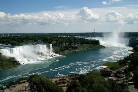
Niagara Şelaleleri - Kanada
Kanada ile Amerika Birleşik Devletleri sınırında yer alan Niagara Şelaleleri, dünyanın en ünlü ve en güçlü şelalelerinden biridir. Muhteşem manzarası, tekne turları ve ışık gösterileriyle her yıl milyonlarca turisti kendine çeker.
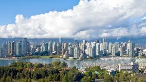
Vancouver - Kanada
Vancouver, Kanada'nın Britanya Kolumbiyası eyaletinde yer alan, doğal güzellikleri ve çok kültürlü yapısıyla tanınan bir kıyı kentidir. Okyanus ve dağlarla çevrili olan şehir, hem doğaseverler hem de şehir yaşamını sevenler için ideal bir destinasyondur.
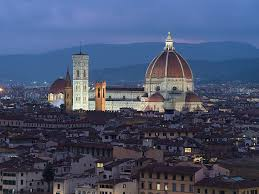
Floransa - İtalya
Floransa, Rönesans’ın doğduğu yer olarak kabul edilen ve sanat, mimari ile tarihin iç içe geçtiği İtalya’nın en önemli şehirlerinden biridir. Michelangelo, Leonardo da Vinci ve Dante gibi isimlerle özdeşleşen bu şehir; Uffizi Galerisi, Duomo Katedrali ve tarihi köprüleriyle ünlüdür.
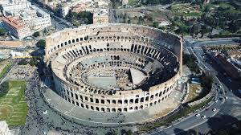
Kolezyum - İtalya
Roma'nın simgelerinden biri olan Kolezyum, Antik Roma döneminde gladyatör dövüşleri ve çeşitli gösteriler için inşa edilmiş devasa bir amfitiyatrodur. M.S. 80 yılında tamamlanan bu tarihi yapı, günümüzde İtalya'nın en çok ziyaret edilen anıtlarından biridir.
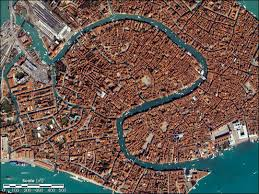
Venedik - İtalya
Venedik, kanalları, gondolları ve tarihi mimarisiyle ünlü, Adriyatik Denizi üzerinde kurulu eşsiz bir şehirdir. San Marco Meydanı, Rialto Köprüsü ve Venedik Film Festivali ile dünya çapında tanınan bu romantik şehir, UNESCO Dünya Mirası Listesi’nde yer almaktadır.

Gobustan Kaya Resimleri - Azerbaycan
Gobustan Kaya Resimleri, Azerbaycan'ın Gobustan bölgesinde yer alan, MÖ 5. binyıla tarihlenen kaya üzerine işlenmiş resimlerden oluşan bir arkeolojik alandır. UNESCO Dünya Mirası Listesi'nde yer alan bu site, erken insanlar hakkında önemli bilgiler sunar ve bölgenin tarihini anlamak için eşsiz bir kaynaktır.

Alev Kuleleri - Azerbaycan
Bakü'nün simgelerinden biri olan Alev Kuleleri, modern mimarinin harika örneklerinden biridir. Bu üç ikonik gökdelen, ateşi simgeleyen bir tasarıma sahiptir ve şehri geceleyin aydınlatan büyük birer ışık kaynağıdır. Hem iş merkezi hem de otel olarak kullanılan bu yapılar, Azerbaycan'ın hızla gelişen yüzünü temsil eder.

Old City - Azerbaycan
Bakü'nün tarihi merkezi olan İçerişehir, UNESCO Dünya Mirası Listesi'nde yer alır. Şehir, dar sokakları, tarihi camileri, sarayları ve surlarıyla ünlüdür. Burada yer alan Şirvanşahlar Sarayı ve Kız Kulesi, Azerbaycan'ın tarihini ve kültürünü yansıtan önemli yapılar arasında yer alır.

Köln Katedrali - Almanya
Almanya'nın en büyük katedrali olan Köln Katedrali, Gotik mimarinin muazzam bir örneğidir. 1248 yılında inşasına başlanan katedral, 1880 yılında tamamlanmıştır. UNESCO Dünya Mirası Listesi'nde yer alan bu yapı, şehre gelen turistler için önemli bir cazibe merkezidir.

Berlin Duvarı - Almanya
Berlin Duvarı, 1961 ile 1989 yılları arasında Almanya'nın başkenti Berlin'i ikiye bölen tarihi bir yapıdır. Soğuk Savaş dönemi boyunca Doğu Almanya ile Batı Almanya arasında bir sınır işlevi görmüştür. Günümüzde duvarın kalan parçaları, dünya çapında özgürlük ve birleşmenin sembollerinden biri olarak kabul edilir.

Neuschwanstein Şatosu - Almanya
Almanya'nın Bavyera bölgesinde yer alan Neuschwanstein Şatosu, masal gibi mimarisiyle ünlüdür. 19. yüzyılda Bavyera Kralı II. Ludwig tarafından inşa ettirilen şato, Walt Disney'in "Uyuyan Güzel" masalındaki şatoya ilham kaynağı olmuştur. Dağların zirvesine inşa edilmiş olan bu şato, Almanya'nın en çok ziyaret edilen turistik yerlerinden biridir.
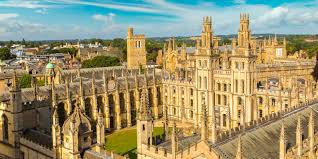
Oxford Üniversitesi - İngiltere
Oxford Üniversitesi, İngiltere'nin en eski ve en prestijli üniversitelerinden biridir. 12. yüzyılda kurulan bu üniversite, dünya çapında tanınan akademik mükemmeliyetiyle ünlüdür. Birçok ünlü bilim insanı, yazar ve lider Oxford'tan mezun olmuştur. Aynı zamanda üniversite, tarihi binaları, kütüphaneleri ve prestijli kolejlere sahip olmasıyla da dikkat çeker.
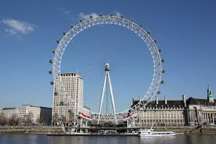
London Eye - İngiltere
London Eye, Londra'nın en tanınmış simgelerinden biridir. 2000 yılında açılan bu dev dönme dolap, Thames Nehri kıyısında yer alır ve şehri yüksekten görmek isteyenler için eşsiz bir deneyim sunar. 135 metre yüksekliği ile Avrupa'nın en büyük dönme dolaplarından biri olan London Eye, her yıl milyonlarca turist çeker.
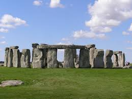
Stonehenge - İngiltere
Stonehenge, İngiltere'nin en ünlü ve gizemli anıtlarından biridir. Neolitik dönemde inşa edildiği tahmin edilen bu taş yapılar, dünyanın en eski ve en bilinen megalitik yapılarından biridir. Tarihi ve astronomik anlamları ile ilgilenen araştırmacılar için büyük bir öneme sahiptir. Bugün, Stonehenge, UNESCO Dünya Mirası Listesi'nde yer almakta ve her yıl milyonlarca turist tarafından ziyaret edilmektedir.
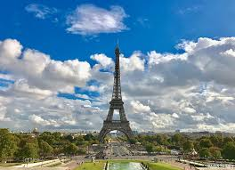
Eiffel Kulesi - Fransa
Eiffel Kulesi, Paris'in en ünlü simgelerinden biridir ve dünyanın en tanınmış yapılarından biridir. 1889'da, Fransız mühendis Gustave Eiffel tarafından tasarlanan bu kule, başlangıçta Paris Fuarı için inşa edilmiştir. 324 metre yüksekliğiyle, Paris'in en yüksek yapısı olan Eiffel Kulesi, her yıl milyonlarca turistin ziyaret ettiği bir cazibe merkezidir.
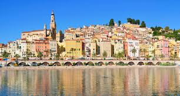
Nice - Fransa
Nice, Fransa'nın güneydoğusunda yer alan, Akdeniz'e kıyısı bulunan zarif bir şehir olup, Fransız Rivierası'nın en popüler turistik destinasyonlarından biridir. Muhteşem plajları, tarihi binaları ve renkli sokaklarıyla ünlüdür. Nice, aynı zamanda müze ve galerileriyle kültürel açıdan zengin bir şehirdir ve her yıl pek çok turist tarafından ziyaret edilmektedir.
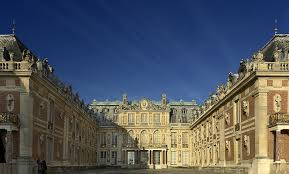
Versay Sarayı - Fransa
Versay Sarayı, Fransa'nın başkenti Paris'in güneyinde yer alır ve Fransız monarşisinin gücünü simgeleyen en önemli yapılarından biridir. 17. yüzyılda Louis XIV tarafından inşa ettirilen bu ihtişamlı saray, Barok mimarinin en güzel örneklerinden biridir. Versay Sarayı, özellikle muazzam bahçeleri, görkemli iç mekanları ve tarihi önemiyle ziyaretçileri cezbetmektedir. Bugün, UNESCO Dünya Mirası Listesi'nde yer alır.
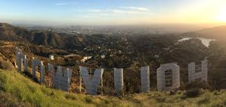
Hollywood - ABD
Hollywood, Los Angeles, Kaliforniya'da bulunan ve dünya çapında sinemanın merkezi olarak bilinen bir bölgedir. Hollywood, film endüstrisinin kalbi olarak kabul edilir ve birçok ünlü stüdyoya ev sahipliği yapmaktadır. Aynı zamanda, Hollywood Walk of Fame, Hollywood Sign ve ünlü sinema yıldızlarının ellerinin basıldığı alanlar gibi simgelerle de tanınır.
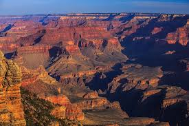
Büyük Kanyon - ABD
Büyük Kanyon, Arizona eyaletinde yer alan ve dünya çapında bilinen bir doğal harikadır. Yaklaşık 446 kilometre uzunluğunda ve 1.6 kilometre genişliğinde olan bu devasa kanyon, 6 milyon yıl süren erozyon süreci sonucu oluşmuştur. Büyük Kanyon, UNESCO Dünya Mirası Listesi'nde yer almakta olup, eşsiz manzaraları ve yürüyüş yollarıyla doğa severlerin ilgisini çeker.
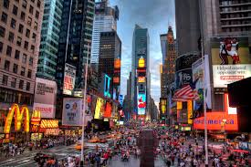
Times Meydanı - ABD
Times Meydanı, New York'un en ünlü ve en işlek bölgelerinden biridir. "Dünyanın En Işıklarla Dolu Yeri" olarak bilinen bu meydan, dev ekranları, reklam panoları ve sürekli hareketli kalabalığı ile ünlüdür. Times Meydanı, aynı zamanda Broadway tiyatrolarının merkezi olmasının yanı sıra, yılbaşı gecesi yapılan ünlü "Top Drop" etkinliği ile de dikkat çeker.

Zermatt - İsviçre
Zermatt, İsviçre'nin en popüler dağ kasabalarından biridir ve özellikle kayak ve dağcılıkla ünlüdür. Matterhorn Dağı'nın eteğinde yer alan bu kasaba, her yıl binlerce turist tarafından ziyaret edilmektedir. Zermatt, araç trafiğine kapalı olmasıyla da bilinir ve sakin atmosferi, zarif otelleri ve restoranları ile doğa severlere huzurlu bir kaçış sunar.

Cenevre Gölü - İsviçre
Cenevre Gölü, İsviçre'nin en büyük göllerinden biri olup, Fransız sınırına yakın bir konumda yer almaktadır. Göl, Cenevre şehrinin hemen yanında yer alır ve çevresinde birçok lüks otel, restoran ve park bulunur. Cenevre Gölü, özellikle tekne turları, su sporları ve eşsiz manzaralarıyla ünlüdür. Ayrıca, gölün kıyısındaki Mont Blanc Dağı'na bakan panoramik manzaralar, bölgeyi fotoğrafçılar ve doğa severler için cazip kılar.

Luzern Gölü - İsviçre
Luzern Gölü, İsviçre'nin en güzel göllerinden biri olup, Luzern şehri ile aynı ismi taşır. Alplerin eteklerinde yer alan bu göl, ziyaretçilerine olağanüstü dağ manzaraları sunar. Gölün etrafındaki köyler ve kasabalar, bölgenin tarihini ve kültürünü yansıtan zarif yapılarıyla ünlüdür. Ayrıca, Luzern Gölü çevresinde tekne turları ve doğa yürüyüşleri gibi çeşitli açık hava etkinlikleri yapılabilmektedir.

İguazu Şelaleleri - Arjantin
İguazu Şelaleleri, Arjantin ile Brezilya arasındaki sınırda yer alan, dünyanın en büyük ve en etkileyici şelalelerinden biridir. 2.7 kilometre uzunluğundaki bu şelale zinciri, 275'ten fazla düşüşten oluşur ve her biri farklı büyüklükte ve güçtedir. İguazu, UNESCO Dünya Mirası Listesi'nde yer almakta olup, bölgedeki milli parklar, zengin flora ve faunasıyla doğa severler için bir cennettir.

La Boca Mahallesi - Arjantin
La Boca Mahallesi, Arjantin'in başkenti Buenos Aires'te yer alan tarihi bir semttir ve renkli evleri, dar sokakları ve canlı atmosferi ile ünlüdür. Bu semt, Arjantin futbolunun kalbinin attığı yerlerden biridir, çünkü Boca Juniors futbol kulübü burada kurulmuştur. La Boca, sanat galerileri, sokak sanatçıları ve tango gösterileriyle de tanınır. Ziyaretçilerine hem kültürel hem de görsel bir şölen sunar.

Perito Moreno Buzulu - Arjantin
Perito Moreno Buzulu, Arjantin'in Patagonya bölgesinde yer alan, dünyanın en büyük buzullarından biridir. Bu buzul, her yıl birkaç metre ilerleyerek göle doğru hareket eder ve zaman zaman buzulun kırılma sesiyle büyük bir gösteri sergiler. UNESCO Dünya Mirası Listesi'nde yer alan Perito Moreno, doğa severler ve macera tutkunları için eşsiz bir gezi rotasıdır. Ayrıca, buzulun etrafındaki milli park, zengin hayvan ve bitki örtüsüyle dikkat çeker.
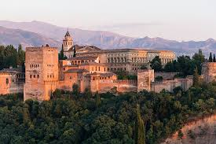
Elhamra Sarayı - İspanya
Elhamra Sarayı, İspanya'nın güneyindeki Granada şehrinde yer alan, Endülüs İslam mimarisinin en önemli örneklerinden biridir. Bu tarihi saray, 13. yüzyılda inşa edilmiştir ve zarif süslemeleri, geniş avluları ve görkemli bahçeleriyle ünlüdür. Elhamra, UNESCO Dünya Mirası Listesi'nde yer almakta olup, her yıl milyonlarca turistin ilgisini çeker. İspanyol tarihinde önemli bir yer tutan bu saray, aynı zamanda şairlere, sanatçılara ve tarihçilere ilham kaynağı olmuştur.
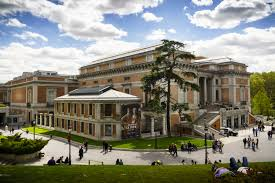
Prado Müzesi - İspanya
Prado Müzesi, Madrid'de bulunan ve dünyanın en önemli sanat müzelerinden biri olarak kabul edilir. 1819 yılında kurulan bu müze, özellikle Avrupa sanatının altın çağına ait eserlerle doludur. El Greco, Velázquez, Goya ve Rubens gibi ünlü sanatçılara ait pek çok eser müzede sergilenmektedir. Prado, sadece tarihi değil, aynı zamanda kültürel bir hazine olarak da İspanya'nın sanatsal mirasını dünyaya tanıtmaktadır.
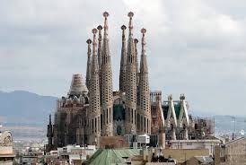
Sagrada Familia - İspanya
Sagrada Familia, Barselona'da yer alan ve Antoni Gaudí'nin en ünlü eserlerinden biri olan büyük bir bazilikadır. İnşaatına 1882 yılında başlanan bu eşsiz yapı, hala tamamlanmamış olmasına rağmen, UNESCO Dünya Mirası Listesi'nde yer almaktadır. Gotik ve modernist tarzların harmanlandığı yapının görkemli mimarisi, her yıl milyonlarca turisti cezbetmektedir. Gaudí'nin yaratıcı dehası, Sagrada Familia'yı dünyanın en tanınmış ve etkileyici dini yapılarından biri haline getirmiştir.

Sentosa Adası - Singapur
Sentosa Adası, Singapur'un en popüler tatil ve eğlence destinasyonlarından biridir. Adada bulunan plajlar, temalı parklar, lüks tatil köyleri ve ünlü S.E.A. Aquarium gibi birçok turistik nokta ile ziyaretçilere eşsiz bir deneyim sunmaktadır. Ayrıca, Sentosa Adası'nda bulunan Universal Studios Singapur, dünyanın dört bir yanından gelen turistlerin ilgisini çeker. Sentosa, hem eğlenceli aktiviteler hem de doğal güzellikleri ile Singapur'un en gözde tatil beldesidir.

Sky Park - Singapur
Sky Park, Singapur'daki Marina Bay Sands Oteli'nin çatı katında yer alan ünlü bir gözlem terasıdır. 200 metreye kadar yükselen bu eşsiz park, ziyaretçilere şehri yüksekten izleme fırsatı sunmaktadır. Ayrıca Sky Park, havuz, restoranlar ve alışveriş alanları gibi birçok olanakla donatılmıştır. Singapur'un en ikonik yapılarından biri olan Sky Park, şehre gelen turistlerin mutlaka görmesi gereken yerlerden biridir.

Gardens by the Bay - Singapur
Gardens by the Bay, Singapur'un en ikonik botanik bahçelerinden biridir ve modern mimari ile doğal güzellikleri birleştirir. Bu büyük açık alan, devasa Süper Ağaçlar, şeffaf çelik kubbeler ve çeşitli temalı bahçelerle donatılmıştır. Bay South Garden, 101 hektarlık alanıyla en büyük bahçe olup, iç mekan bitkileri sergileri ve yürüyüş yollarıyla ziyaretçilere doğal bir deneyim sunar. Gardens by the Bay, Singapur'un yeşil alanlarını ve sürdürülebilirliğini simgeleyen eşsiz bir noktadır.